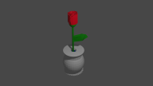

Kállay János
Telefonszám: +36 20 258 72100
E-mail: 2008janikamostani@gmail.com

A Pogány Frigyes Technikum
A Pogány Frigyes Technikuma járok a 9.D osztályba a Informatika és távkőzlés ágazatra tanultam HTML és CSS is. A Digitális Közösségi Műhelyben 3D modeleztem és it van az egyik 3D modelezésem.

A Pestszentimrei Ady Endre Általános Iskola
A Pestszentimrei Ady Endre Általános Iskolában a tanároknak sokszor segítettem beállítani a gépet és segítettem egyéb feladatokban mint például a kertészkedés is és sokszor voltam ott a hónap tanulója. Ott jártam robotika szakköre és ott nyertem egyszer a Microsoft word versenyt 1.fordulójában.

A Microsoft 365
A Microsoft 365-ben van tapasztalatom tudok készítenni jó Word dokumentumak és tudok készíteni jó bemutatókat is akár még Excel ben is tudok dolgozni.

Tanulom
Tanulom a JavaScriptet és a Pythont.

Monoton munka
Szívesen válalok monoton munkákakat is.
Vége
Köszönöm szépen hogy végig nézted További tartalmakért látogas el a fejlesztés allat álló janiweb.eu-ra.